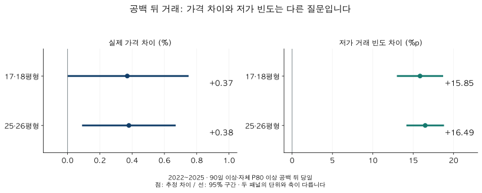

거래량과 시장 읽기 · 거래 공백과 가격
오랜만에 거래된 아파트는 싸게 팔릴까? 거래 공백과 가격 비교
서울·경기 2022~2025년 거래 공백 뒤 가격을 비교합니다. 실제 가격 차이와 과거 참고가격 대비 저가 빈도를 분리하고, 60·90·120일 기준과 연도별 불확실성을 확인합니다.
분석 기간 · 2022~2025년 · 서울·경기 | 자료 기준일 · 2026-10-04
몇 달 동안 거래가 없던 아파트에 새 계약이 올라왔습니다. “오랜만에 팔렸으니 급매였을까?” 마지막 가격보다 낮다는 사실만으로는 답하기 어렵습니다. 그 사이 시장이 바뀌었을 수 있고, 거래된 집의 조건도 다르기 때문입니다.
1. ‘오랜만에 거래됐다’를 어떻게 정했을까요?
같은 단지·비교 면적에서 서로 다른 계약일 사이의 간격을 계산했습니다. 기본 기준은 90일 이상이면서, 그 묶음 자체의 과거 공백 중 상위 20%에 해당하는 길이 이상입니다. 과거 공백이 20개 이상 있어야 비교에 포함합니다. 원래 거래가 드문 곳에서 평소와 비슷한 간격을 모두 특별한 공백으로 부르지 않기 위한 조건입니다.
새 거래가 나온 날을 ‘재거래 당일’로 정하고 같은 날 계약들은 같은 상태로 분류했습니다. 이후 1~30일, 31~60일은 별도로 비교합니다. 거래가 없던 날의 가격을 만들어 채우지는 않았습니다. 비교 기준은 이 구간들 밖에 있는, 과거 이력이 충분한 적격 거래입니다.
분석 대상은 59형(전용 17·18평형)과 84형(전용 25·26평형)입니다. 각각 전용 54.55㎡ 이상 61.16㎡ 미만, 80.99㎡ 이상 87.60㎡ 미만이며, 가격 모형 안에서는 단지 안의 원래 주택형도 구분합니다. 정확히 59㎡나 84㎡인 집만 비교한 결과는 아닙니다.
매물을 내놓은 날짜나 철회한 날짜가 없으므로 ‘팔리는 데 90일 걸린 집’을 관측한 것이 아닙니다. 팔리지 않은 매물, 소유자의 자금 사정, 급매 여부도 이 정의로 알 수 없습니다.
2. 동시기 조건을 맞춘 실제 가격은 낮았을까요?
같은 단지의 같은 주택형·연도, 같은 시군구·계약월, 면적·층과 평상시 거래량 조건을 통제했습니다. 비교 대상은 실제 계약금액이며, 모형 참고가격에서 얼마나 벗어났는지를 가격 결과로 쓰지 않았습니다. 아래 차이는 이런 조건을 조정한 평균적인 연관성입니다.

서울·경기 · 2022~2025 · 기본 90일 공백 정의 · 재거래 당일과 사건 구간 밖 거래의 조건 조정 비교. 모형 참고가격 요건을 충족하는 표본만 오른쪽 결과에 포함됩니다. 신뢰구간은 개별 비교 기준입니다.
| 면적 | 차이 | 95% 신뢰구간 | p | FDR q |
|---|---|---|---|---|
| 59형(전용 17·18평형) | +0.37 | +0.00 ~ +0.75 | 0.0469 | 0.2392 |
| 84형(전용 25·26평형) | +0.38 | +0.09 ~ +0.67 | 0.0094 | 0.2392 |
추정값은 두 면적 모두 양수입니다. 하지만 여러 비교를 한꺼번에 검정할 때 우연히 나온 차이를 걸러 내도록 보정한 값(q값)은 두 면적 모두 약 0.24로, 흔히 쓰는 0.05~0.10 기준보다 큽니다. 보편적인 할인을 확인하지 못했다는 것과, 공백이 가격을 올린다는 것은 다릅니다. 신뢰구간이 포함하는 차이의 크기를 함께 읽어야 합니다. 59형의 구간 하한은 표시 정밀도에서 0.00%이므로 표만 보고 엄밀하게 0보다 크다고 판단하지 않습니다.
집의 내부 상태·수리·방향, 거래 당사자의 사정, 월 안의 세부 시장 변화처럼 관측하지 못한 차이가 남습니다. 조건 조정은 같은 집을 무작위로 공백에 배정한 실험이 아닙니다.
3. 그렇다면 ‘참고가격보다 낮은 거래’는 왜 많았을까요?
두 번째 질문은 실제 가격이 계약일보다 엄격히 앞선 목요일의 모형 참고가격보다 5% 이상 낮은지입니다. 필요한 관측 수·신뢰도·최신성 조건을 통과한 참고가격이 있는 계약만 비교합니다. 이 가격은 과거 거래로 계산한 연구용 추정치이며, 현재의 공식 시세나 매수 가능한 호가가 아닙니다.
| 면적 | 차이 | 95% 신뢰구간 | p | FDR q |
|---|---|---|---|---|
| 59형(전용 17·18평형) | +15.85 | +12.98 ~ +18.71 | <0.0001 | <0.0001 |
| 84형(전용 25·26평형) | +16.49 | +14.16 ~ +18.82 | <0.0001 | <0.0001 |
예를 들어 빈도 차이 +15%p는 같은 비교 조건에서 저가로 분류되는 비율의 차이를 말합니다. 개별 아파트를 15% 싸게 살 수 있다는 가격 할인율로 바꿀 수 없습니다. 이 표는 전체 계약 중 저가 거래의 절대 비율도 아닙니다.
가장 강한 반론은 참고가격의 시점입니다. 긴 공백 동안 시장이 하락했다면, 새 계약이 동시기 주변 가격과 비슷해도 오래된 정보를 담은 참고가격보다 낮게 보일 수 있습니다. 참고가격에 마지막으로 반영된 거래 이후 경과일을 추가 통제한 탐색 분석에서는 차이가 +11.65%p와 +12.41%p로 줄었습니다. 사라지지는 않았으며, 줄어든 비중을 특정 원인의 기여율이라고 해석할 수도 없습니다.
표본 차이도 확인했습니다. 참고가격 요건을 충족하는 같은 표본에서 실제 가격을 비교하면 +0.38%와 +0.31%였고 두 95% 구간 모두 0을 포함했습니다. 따라서 이번 결과를 단순히 ‘가격 분석과 저가 빈도 분석에 들어간 집이 달라서 생긴 차이’로만 설명하기도 어렵습니다. 참고가격의 갱신 방식과 관측하지 못한 조건이 함께 남아 있습니다.
4. 공백이 더 길거나 시기가 달라지면 결론도 달라질까요?
최소 공백을 60일과 120일로 바꿔도 두 면적의 실제 가격 추정값은 양수였습니다. 이들은 다른 기준으로 고른 거래들의 비교입니다. ‘90일 기다린 집이 60일 기다린 같은 집보다 얼마 더 비싸다’는 실험도, 공백 길이에 비례하는 가격 곡선도 아닙니다.
| 최소 공백·면적 | 차이 | 95% 신뢰구간 | p | FDR q |
|---|---|---|---|---|
| 60일 이상 · 59형(전용 17·18평형) | +0.23 | -0.05 ~ +0.50 | 0.0964 | 0.3356 |
| 60일 이상 · 84형(전용 25·26평형) | +0.24 | +0.03 ~ +0.46 | 0.0253 | 0.2528 |
| 90일 이상 · 59형(전용 17·18평형) | +0.37 | +0.00 ~ +0.75 | 0.0469 | 0.2392 |
| 90일 이상 · 84형(전용 25·26평형) | +0.38 | +0.09 ~ +0.67 | 0.0094 | 0.2392 |
| 120일 이상 · 59형(전용 17·18평형) | +0.15 | -0.33 ~ +0.63 | 0.5310 | 0.8592 |
| 120일 이상 · 84형(전용 25·26평형) | +0.33 | -0.05 ~ +0.72 | 0.0865 | 0.3356 |
연도별 결과는 일정하지 않았습니다. 2023년은 두 면적에서 양의 차이가 비교적 뚜렷했지만, 다른 연도에는 불확실성이 더 크거나 부호가 달랐습니다. 2024~2025년을 따로 보면 59형은 +0.59%, 84형은 +0.13%이며 후자의 95% 구간은 0을 포함합니다. 이는 과거 자료를 시기로 나눠 확인한 결과이고, 새 거래를 미리 예측한 성과가 아닙니다.
| 연도·면적 | 차이 | 95% 신뢰구간 | p | FDR q |
|---|---|---|---|---|
| 2022 · 59형(전용 17·18평형) | +0.04 | -0.70 ~ +0.80 | 0.9072 | 0.9639 |
| 2023 · 59형(전용 17·18평형) | +0.72 | +0.21 ~ +1.24 | 0.0055 | 0.0179 |
| 2024 · 59형(전용 17·18평형) | +0.69 | +0.12 ~ +1.27 | 0.0170 | 0.0724 |
| 2025 · 59형(전용 17·18평형) | +0.47 | -0.08 ~ +1.03 | 0.0885 | 0.2314 |
| 2022 · 84형(전용 25·26평형) | +0.14 | -0.48 ~ +0.76 | 0.6572 | 0.8467 |
| 2023 · 84형(전용 25·26평형) | +1.19 | +0.76 ~ +1.62 | <0.0001 | <0.0001 |
| 2024 · 84형(전용 25·26평형) | -0.08 | -0.52 ~ +0.36 | 0.7224 | 0.9077 |
| 2025 · 84형(전용 25·26평형) | +0.36 | -0.08 ~ +0.79 | 0.1033 | 0.2423 |
2022년 이전의 분석 가능한 기간에서는 참고가격 대비 저가 빈도 차이가 +0.67%p와 +0.91%p로, 최근 네 해의 값보다 작았습니다. 서로 다른 시기의 추정값 비교만으로 원인이나 시기 간 차이의 유의성을 확정할 수는 없습니다. 거래가중, 평상시 월 1건 이상인 표본, 장기 이력의 결과도 아래에 함께 두었습니다. 유리한 기간이나 기준 하나만 골라 결론을 만들지 않았습니다.
5. 내 후보에서는 무엇을 확인하면 될까요?
새 계약이 나왔다면 ‘몇 달 만인가’ 다음에 ‘무엇과 비교해서 싼가’를 적어보세요. 같은 단지의 오래된 계약과 비교한 차이인지, 동시기·비슷한 조건의 계약과 비교한 차이인지에 따라 질문이 달라집니다.
- 날짜를 맞춥니다. 새 계약일, 직전 비교 계약일, 자료 확인일을 따로 적습니다. 최근월의 신고·정정 가능성도 확인합니다.
- 조건을 맞춥니다. 전용면적, 층, 동·방향·수리 상태와 확인하지 못한 차이를 기록합니다. 같은 면적 묶음이라는 이유만으로 동일한 집은 아닙니다.
- 기준가격의 근거를 적습니다. 실제 계약인지, 호가인지, 모형 추정치인지 구분하고 언제의 정보인지 확인합니다.
- 공백과 급매를 분리합니다. 매도자의 사정이나 매물 이력을 확인하지 못했다면 ‘미확인’으로 남깁니다.
“___일 만의 새 계약. 비교한 가격은 ___년 ___월의 ___. 동시기 유사 조건의 근거는 ___. 아직 확인하지 못한 차이는 ___.”
6. 분석 방법과 전체 비교표
표본·방법·전체 비교표·출처 자세히 보기
서울·경기의 정제된 적격 아파트 매매를 사용했습니다. 명시된 해제와 직거래는 제외하고 과거에 항목 자체가 없었던 미상 상태는 구분합니다. 주 가격 분석은 층과 원래 주택형이 알려진 계약이며, 거래 상태를 만드는 이력에는 층이 없는 적격 계약도 들어갑니다. 월별 과거 거래 이력과 이전 20개 이상의 날짜 간 공백이 충분한 거래만 재거래 분석에 포함합니다. 과거 거래가 적은 모든 단지를 대표하지 않습니다.
실제 계약금액의 로그를 단지×원래 주택형×연도 고정효과, 시군구×계약연월 고정효과, 로그 면적·층 구간·평상시 예상 거래량으로 조정했습니다. 연도별 총 가중치를 같게 두고, 단지 내 상관을 허용한 군집 표준오차와 t 신뢰구간을 사용했습니다. 가격 계수는 지수변환한 백분율 차이입니다. 저가 사건은 같은 구조의 선형확률 모형이며 단위는 %p입니다.
참고가격은 계약일보다 앞선 목요일, 원래 주택형, 6건 이상 관측, 신뢰도 0.20 이상, 초기·오래된 값 제외, 실제 면적 조정을 요구합니다. 자료를 현재 시점에 정리한 연구이므로 당시 실시간으로 알 수 있었던 정보 집합을 재현했다고 주장하지 않습니다.
기본 비교는 각 대비 100계약·20단지 이상과 2개 연도를 요구합니다. 연도별 모형은 30계약·10단지 이상입니다. 기준에 못 미치는 결과는 ‘표본 부족’으로 표시합니다. 신뢰구간은 소수점 둘째 자리 바깥으로 넓혔으며, 개별 비교의 95% 구간이지 모든 비교를 동시에 보장하는 구간이 아닙니다.
p는 개별 검정, FDR q는 원래 분석의 같은 기간·모형·결과 안에서 두 면적과 전체 거래량·공백 지표를 함께 보정한 값입니다. 이 글에 보이는 결과만으로 다시 계산하지 않았습니다. 장기 이력과 최근 기간 분석은 비교군의 구성이 달라 같은 계수라도 q값이 다를 수 있습니다. 31~60일−당일은 공분산을 포함해 직접 추정한 차이이며, 개별 신뢰구간의 겹침으로 계산하지 않았습니다.
장기 원천은 2010년 1월~2026년 9월입니다. 초기 이력은 준비 기간이며 모든 초기 연도에 추정치가 있는 것은 아닙니다. 2025년까지 완결연도와 2026년 1~9월을 포함한 전체 기간을 별도로 표시했습니다. 같은 날 계약·반복 사건·거래에 선택된 주택·과거 누락 항목·국지적 변화가 남아 있어 급매, 경쟁 매도, 뉴스 전파, 인과적 할인은 식별하지 못합니다.
다음 표에는 사전에 정한 기간·정의·민감도의 200개 결과를 함께 제공합니다. ‘재거래 당일’, ‘1~30일’, ‘31~60일’은 사건 밖 거래와의 비교이고, 두 구간을 직접 뺀 줄은 별도 대비입니다. 참고가격 요건을 충족하는 표본과 참고가격 경과일 추가 통제는 결과를 본 뒤 수행한 탐색 분석입니다.
2022~2023 · 기본 모형 · 90일 이상 · 가격 차이 %
| 면적·비교 구간 | 차이 | 95% 신뢰구간 | p | FDR q |
|---|---|---|---|---|
| 59형(전용 17·18평형) · 재거래 당일 | +0.24 | -0.24 ~ +0.72 | 0.3274 | 0.7851 |
| 59형(전용 17·18평형) · 1–30일 | +0.00 | -0.47 ~ +0.48 | 0.9926 | 0.9926 |
| 59형(전용 17·18평형) · 31–60일 | -0.26 | -0.71 ~ +0.20 | 0.2587 | 0.7330 |
| 59형(전용 17·18평형) · 31–60일 − 재거래 당일 | -0.50 | -0.99 ~ +0.00 | 0.0479 | 0.3858 |
| 84형(전용 25·26평형) · 재거래 당일 | +0.46 | +0.07 ~ +0.85 | 0.0194 | 0.3294 |
| 84형(전용 25·26평형) · 1–30일 | +0.34 | -0.09 ~ +0.78 | 0.1142 | 0.5016 |
| 84형(전용 25·26평형) · 31–60일 | +0.27 | -0.10 ~ +0.65 | 0.1489 | 0.5063 |
| 84형(전용 25·26평형) · 31–60일 − 재거래 당일 | -0.19 | -0.59 ~ +0.22 | 0.3603 | 0.7851 |
2024~2025 · 기본 모형 · 90일 이상 · 저가 빈도 차이 %p
| 면적·비교 구간 | 차이 | 95% 신뢰구간 | p | FDR q |
|---|---|---|---|---|
| 59형(전용 17·18평형) · 재거래 당일 | +4.23 | +1.39 ~ +7.07 | 0.0035 | 0.0089 |
| 59형(전용 17·18평형) · 1–30일 | +0.68 | -1.86 ~ +3.22 | 0.5985 | 0.5985 |
| 59형(전용 17·18평형) · 31–60일 | -1.58 | -3.95 ~ +0.80 | 0.1919 | 0.2467 |
| 59형(전용 17·18평형) · 31–60일 − 재거래 당일 | -5.81 | -9.44 ~ -2.17 | 0.0017 | 0.0069 |
| 84형(전용 25·26평형) · 재거래 당일 | +5.09 | +2.66 ~ +7.51 | <0.0001 | 0.0007 |
| 84형(전용 25·26평형) · 1–30일 | +2.42 | +0.35 ~ +4.50 | 0.0220 | 0.0482 |
| 84형(전용 25·26평형) · 31–60일 | +0.76 | -1.18 ~ +2.69 | 0.4436 | 0.4697 |
| 84형(전용 25·26평형) · 31–60일 − 재거래 당일 | -4.33 | -7.23 ~ -1.43 | 0.0034 | 0.0089 |
2024~2025 · 기본 모형 · 90일 이상 · 가격 차이 %
| 면적·비교 구간 | 차이 | 95% 신뢰구간 | p | FDR q |
|---|---|---|---|---|
| 59형(전용 17·18평형) · 재거래 당일 | +0.59 | +0.19 ~ +1.00 | 0.0034 | 0.0169 |
| 59형(전용 17·18평형) · 1–30일 | +0.79 | +0.39 ~ +1.20 | <0.0001 | 0.0007 |
| 59형(전용 17·18평형) · 31–60일 | +0.51 | +0.16 ~ +0.86 | 0.0035 | 0.0169 |
| 59형(전용 17·18평형) · 31–60일 − 재거래 당일 | -0.08 | -0.54 ~ +0.38 | 0.7327 | 0.7938 |
| 84형(전용 25·26평형) · 재거래 당일 | +0.13 | -0.19 ~ +0.44 | 0.4192 | 0.5279 |
| 84형(전용 25·26평형) · 1–30일 | +0.23 | -0.09 ~ +0.54 | 0.1503 | 0.2423 |
| 84형(전용 25·26평형) · 31–60일 | +0.28 | -0.02 ~ +0.59 | 0.0588 | 0.1251 |
| 84형(전용 25·26평형) · 31–60일 − 재거래 당일 | +0.16 | -0.21 ~ +0.53 | 0.3993 | 0.5279 |
2022~2025 · 참고가격 경과일 추가 통제 · 90일 이상 · 저가 빈도 차이 %p
| 면적·비교 구간 | 차이 | 95% 신뢰구간 | p | FDR q |
|---|---|---|---|---|
| 59형(전용 17·18평형) · 재거래 당일 | +11.65 | +8.72 ~ +14.58 | <0.0001 | <0.0001 |
| 59형(전용 17·18평형) · 1–30일 | +3.91 | +1.38 ~ +6.45 | 0.0025 | 0.0034 |
| 59형(전용 17·18평형) · 31–60일 | +1.53 | -0.72 ~ +3.78 | 0.1813 | 0.2039 |
| 59형(전용 17·18평형) · 31–60일 − 재거래 당일 | -10.12 | -13.46 ~ -6.78 | <0.0001 | <0.0001 |
| 84형(전용 25·26평형) · 재거래 당일 | +12.41 | +10.03 ~ +14.79 | <0.0001 | <0.0001 |
| 84형(전용 25·26평형) · 1–30일 | +3.57 | +1.44 ~ +5.70 | 0.0010 | 0.0015 |
| 84형(전용 25·26평형) · 31–60일 | -0.48 | -2.40 ~ +1.44 | 0.6233 | 0.6600 |
| 84형(전용 25·26평형) · 31–60일 − 재거래 당일 | -12.89 | -15.77 ~ -10.01 | <0.0001 | <0.0001 |
2022~2025 · 참고가격 요건을 충족하는 동일 표본 · 90일 이상 · 가격 차이 %
| 면적·비교 구간 | 차이 | 95% 신뢰구간 | p | FDR q |
|---|---|---|---|---|
| 59형(전용 17·18평형) · 재거래 당일 | +0.38 | -0.05 ~ +0.82 | 0.0814 | 0.2930 |
| 59형(전용 17·18평형) · 1–30일 | +0.25 | -0.13 ~ +0.63 | 0.1896 | 0.4319 |
| 59형(전용 17·18평형) · 31–60일 | -0.06 | -0.41 ~ +0.29 | 0.7229 | 0.8867 |
| 59형(전용 17·18평형) · 31–60일 − 재거래 당일 | -0.45 | -0.91 ~ +0.02 | 0.0587 | 0.2930 |
| 84형(전용 25·26평형) · 재거래 당일 | +0.31 | -0.04 ~ +0.66 | 0.0792 | 0.2930 |
| 84형(전용 25·26평형) · 1–30일 | +0.25 | -0.07 ~ +0.58 | 0.1207 | 0.3622 |
| 84형(전용 25·26평형) · 31–60일 | +0.27 | -0.02 ~ +0.56 | 0.0631 | 0.2930 |
| 84형(전용 25·26평형) · 31–60일 − 재거래 당일 | -0.04 | -0.42 ~ +0.34 | 0.8383 | 0.8876 |
2022~2025 · 공백 기준 민감도 · 120일 이상 · 가격 차이 %
| 면적·비교 구간 | 차이 | 95% 신뢰구간 | p | FDR q |
|---|---|---|---|---|
| 59형(전용 17·18평형) · 재거래 당일 | +0.15 | -0.33 ~ +0.63 | 0.5310 | 0.8592 |
| 59형(전용 17·18평형) · 1–30일 | +0.04 | -0.44 ~ +0.53 | 0.8607 | 0.8958 |
| 59형(전용 17·18평형) · 31–60일 | -0.09 | -0.53 ~ +0.35 | 0.6843 | 0.8958 |
| 59형(전용 17·18평형) · 31–60일 − 재거래 당일 | -0.24 | -0.75 ~ +0.27 | 0.3478 | 0.7367 |
| 84형(전용 25·26평형) · 재거래 당일 | +0.33 | -0.05 ~ +0.72 | 0.0865 | 0.3356 |
| 84형(전용 25·26평형) · 1–30일 | +0.20 | -0.21 ~ +0.60 | 0.3392 | 0.7367 |
| 84형(전용 25·26평형) · 31–60일 | +0.16 | -0.20 ~ +0.52 | 0.3774 | 0.7367 |
| 84형(전용 25·26평형) · 31–60일 − 재거래 당일 | -0.17 | -0.58 ~ +0.24 | 0.4019 | 0.7367 |
2022~2025 · 공백 기준 민감도 · 60일 이상 · 가격 차이 %
| 면적·비교 구간 | 차이 | 95% 신뢰구간 | p | FDR q |
|---|---|---|---|---|
| 59형(전용 17·18평형) · 재거래 당일 | +0.23 | -0.05 ~ +0.50 | 0.0964 | 0.3356 |
| 59형(전용 17·18평형) · 1–30일 | +0.03 | -0.22 ~ +0.28 | 0.8116 | 0.8958 |
| 59형(전용 17·18평형) · 31–60일 | -0.00 | -0.24 ~ +0.23 | 0.9694 | 0.9694 |
| 59형(전용 17·18평형) · 31–60일 − 재거래 당일 | -0.23 | -0.51 ~ +0.05 | 0.0992 | 0.3356 |
| 84형(전용 25·26평형) · 재거래 당일 | +0.24 | +0.03 ~ +0.46 | 0.0253 | 0.2528 |
| 84형(전용 25·26평형) · 1–30일 | +0.03 | -0.18 ~ +0.24 | 0.7617 | 0.8958 |
| 84형(전용 25·26평형) · 31–60일 | +0.08 | -0.11 ~ +0.27 | 0.4241 | 0.7464 |
| 84형(전용 25·26평형) · 31–60일 − 재거래 당일 | -0.17 | -0.39 ~ +0.05 | 0.1260 | 0.3696 |
2022~2025 · 평상시 월 1건 이상 표본 · 90일 이상 · 가격 차이 %
| 면적·비교 구간 | 차이 | 95% 신뢰구간 | p | FDR q |
|---|---|---|---|---|
| 59형(전용 17·18평형) · 재거래 당일 | +0.65 | +0.16 ~ +1.15 | 0.0089 | 0.0401 |
| 59형(전용 17·18평형) · 1–30일 | +0.19 | -0.29 ~ +0.66 | 0.4380 | 0.5401 |
| 59형(전용 17·18평형) · 31–60일 | -0.17 | -0.62 ~ +0.28 | 0.4501 | 0.5401 |
| 59형(전용 17·18평형) · 31–60일 − 재거래 당일 | -0.82 | -1.34 ~ -0.29 | 0.0021 | 0.0317 |
| 84형(전용 25·26평형) · 재거래 당일 | +0.57 | +0.18 ~ +0.97 | 0.0035 | 0.0317 |
| 84형(전용 25·26평형) · 1–30일 | +0.33 | -0.07 ~ +0.73 | 0.1054 | 0.3533 |
| 84형(전용 25·26평형) · 31–60일 | +0.26 | -0.09 ~ +0.61 | 0.1419 | 0.3533 |
| 84형(전용 25·26평형) · 31–60일 − 재거래 당일 | -0.31 | -0.73 ~ +0.11 | 0.1372 | 0.3533 |
2022~2025 · 기본 모형 · 90일 이상 · 저가 빈도 차이 %p
| 면적·비교 구간 | 차이 | 95% 신뢰구간 | p | FDR q |
|---|---|---|---|---|
| 59형(전용 17·18평형) · 재거래 당일 | +15.85 | +12.98 ~ +18.71 | <0.0001 | <0.0001 |
| 59형(전용 17·18평형) · 1–30일 | +2.67 | +0.11 ~ +5.23 | 0.0402 | 0.0452 |
| 59형(전용 17·18평형) · 31–60일 | +1.42 | -0.85 ~ +3.68 | 0.2186 | 0.2315 |
| 59형(전용 17·18평형) · 31–60일 − 재거래 당일 | -14.43 | -17.71 ~ -11.14 | <0.0001 | <0.0001 |
| 84형(전용 25·26평형) · 재거래 당일 | +16.49 | +14.16 ~ +18.82 | <0.0001 | <0.0001 |
| 84형(전용 25·26평형) · 1–30일 | +2.50 | +0.35 ~ +4.65 | 0.0227 | 0.0272 |
| 84형(전용 25·26평형) · 31–60일 | -0.51 | -2.44 ~ +1.43 | 0.6062 | 0.6062 |
| 84형(전용 25·26평형) · 31–60일 − 재거래 당일 | -17.00 | -19.83 ~ -14.16 | <0.0001 | <0.0001 |
2022~2025 · 기본 모형 · 90일 이상 · 가격 차이 %
| 면적·비교 구간 | 차이 | 95% 신뢰구간 | p | FDR q |
|---|---|---|---|---|
| 59형(전용 17·18평형) · 재거래 당일 | +0.37 | +0.00 ~ +0.75 | 0.0469 | 0.2392 |
| 59형(전용 17·18평형) · 1–30일 | +0.24 | -0.12 ~ +0.59 | 0.1833 | 0.4694 |
| 59형(전용 17·18평형) · 31–60일 | -0.03 | -0.36 ~ +0.30 | 0.8535 | 0.9381 |
| 59형(전용 17·18평형) · 31–60일 − 재거래 당일 | -0.40 | -0.80 ~ +0.00 | 0.0461 | 0.2392 |
| 84형(전용 25·26평형) · 재거래 당일 | +0.38 | +0.09 ~ +0.67 | 0.0094 | 0.2392 |
| 84형(전용 25·26평형) · 1–30일 | +0.29 | -0.01 ~ +0.60 | 0.0551 | 0.2392 |
| 84형(전용 25·26평형) · 31–60일 | +0.26 | -0.01 ~ +0.53 | 0.0572 | 0.2392 |
| 84형(전용 25·26평형) · 31–60일 − 재거래 당일 | -0.12 | -0.44 ~ +0.20 | 0.4403 | 0.7128 |
2022~2025 · 연도 균등 대신 거래 균등 가중 · 90일 이상 · 가격 차이 %
| 면적·비교 구간 | 차이 | 95% 신뢰구간 | p | FDR q |
|---|---|---|---|---|
| 59형(전용 17·18평형) · 재거래 당일 | +0.54 | +0.24 ~ +0.84 | 0.0003 | 0.0028 |
| 59형(전용 17·18평형) · 1–30일 | +0.35 | +0.05 ~ +0.66 | 0.0214 | 0.0450 |
| 59형(전용 17·18평형) · 31–60일 | +0.11 | -0.16 ~ +0.38 | 0.4222 | 0.4222 |
| 59형(전용 17·18평형) · 31–60일 − 재거래 당일 | -0.43 | -0.75 ~ -0.11 | 0.0080 | 0.0359 |
| 84형(전용 25·26평형) · 재거래 당일 | +0.50 | +0.26 ~ +0.73 | <0.0001 | 0.0004 |
| 84형(전용 25·26평형) · 1–30일 | +0.34 | +0.09 ~ +0.58 | 0.0055 | 0.0328 |
| 84형(전용 25·26평형) · 31–60일 | +0.25 | +0.03 ~ +0.47 | 0.0225 | 0.0450 |
| 84형(전용 25·26평형) · 31–60일 − 재거래 당일 | -0.25 | -0.50 ~ +0.01 | 0.0536 | 0.0813 |
2022 · 기본 모형 · 90일 이상 · 가격 차이 %
| 면적·비교 구간 | 차이 | 95% 신뢰구간 | p | FDR q |
|---|---|---|---|---|
| 59형(전용 17·18평형) · 재거래 당일 | +0.04 | -0.70 ~ +0.80 | 0.9072 | 0.9639 |
| 59형(전용 17·18평형) · 1–30일 | +0.14 | -0.68 ~ +0.97 | 0.7357 | 0.8626 |
| 59형(전용 17·18평형) · 31–60일 | -0.36 | -1.20 ~ +0.49 | 0.4058 | 0.8373 |
| 59형(전용 17·18평형) · 31–60일 − 재거래 당일 | -0.40 | -1.23 ~ +0.43 | 0.3426 | 0.8373 |
| 84형(전용 25·26평형) · 재거래 당일 | +0.14 | -0.48 ~ +0.76 | 0.6572 | 0.8467 |
| 84형(전용 25·26평형) · 1–30일 | +0.19 | -0.56 ~ +0.94 | 0.6224 | 0.8467 |
| 84형(전용 25·26평형) · 31–60일 | +0.27 | -0.42 ~ +0.96 | 0.4416 | 0.8373 |
| 84형(전용 25·26평형) · 31–60일 − 재거래 당일 | +0.13 | -0.52 ~ +0.78 | 0.6973 | 0.8467 |
2023 · 기본 모형 · 90일 이상 · 가격 차이 %
| 면적·비교 구간 | 차이 | 95% 신뢰구간 | p | FDR q |
|---|---|---|---|---|
| 59형(전용 17·18평형) · 재거래 당일 | +0.72 | +0.21 ~ +1.24 | 0.0055 | 0.0179 |
| 59형(전용 17·18평형) · 1–30일 | -0.05 | -0.57 ~ +0.47 | 0.8368 | 0.9178 |
| 59형(전용 17·18평형) · 31–60일 | -0.13 | -0.57 ~ +0.31 | 0.5579 | 0.7780 |
| 59형(전용 17·18평형) · 31–60일 − 재거래 당일 | -0.85 | -1.35 ~ -0.34 | 0.0011 | 0.0051 |
| 84형(전용 25·26평형) · 재거래 당일 | +1.19 | +0.76 ~ +1.62 | <0.0001 | <0.0001 |
| 84형(전용 25·26평형) · 1–30일 | +0.60 | +0.17 ~ +1.03 | 0.0058 | 0.0179 |
| 84형(전용 25·26평형) · 31–60일 | +0.30 | -0.07 ~ +0.67 | 0.1063 | 0.2409 |
| 84형(전용 25·26평형) · 31–60일 − 재거래 당일 | -0.88 | -1.31 ~ -0.45 | <0.0001 | 0.0004 |
2024 · 기본 모형 · 90일 이상 · 가격 차이 %
| 면적·비교 구간 | 차이 | 95% 신뢰구간 | p | FDR q |
|---|---|---|---|---|
| 59형(전용 17·18평형) · 재거래 당일 | +0.69 | +0.12 ~ +1.27 | 0.0170 | 0.0724 |
| 59형(전용 17·18평형) · 1–30일 | +0.76 | +0.17 ~ +1.36 | 0.0110 | 0.0625 |
| 59형(전용 17·18평형) · 31–60일 | +0.68 | +0.23 ~ +1.13 | 0.0026 | 0.0177 |
| 59형(전용 17·18평형) · 31–60일 − 재거래 당일 | -0.01 | -0.65 ~ +0.63 | 0.9705 | 0.9705 |
| 84형(전용 25·26평형) · 재거래 당일 | -0.08 | -0.52 ~ +0.36 | 0.7224 | 0.9077 |
| 84형(전용 25·26평형) · 1–30일 | -0.10 | -0.56 ~ +0.36 | 0.6642 | 0.8686 |
| 84형(전용 25·26평형) · 31–60일 | +0.24 | -0.17 ~ +0.66 | 0.2467 | 0.4934 |
| 84형(전용 25·26평형) · 31–60일 − 재거래 당일 | +0.32 | -0.21 ~ +0.86 | 0.2301 | 0.4889 |
2025 · 기본 모형 · 90일 이상 · 가격 차이 %
| 면적·비교 구간 | 차이 | 95% 신뢰구간 | p | FDR q |
|---|---|---|---|---|
| 59형(전용 17·18평형) · 재거래 당일 | +0.47 | -0.08 ~ +1.03 | 0.0885 | 0.2314 |
| 59형(전용 17·18평형) · 1–30일 | +0.82 | +0.27 ~ +1.37 | 0.0030 | 0.0145 |
| 59형(전용 17·18평형) · 31–60일 | +0.35 | -0.20 ~ +0.90 | 0.2130 | 0.3687 |
| 59형(전용 17·18평형) · 31–60일 − 재거래 당일 | -0.13 | -0.76 ~ +0.50 | 0.6861 | 0.8498 |
| 84형(전용 25·26평형) · 재거래 당일 | +0.36 | -0.08 ~ +0.79 | 0.1033 | 0.2423 |
| 84형(전용 25·26평형) · 1–30일 | +0.54 | +0.12 ~ +0.96 | 0.0102 | 0.0347 |
| 84형(전용 25·26평형) · 31–60일 | +0.34 | -0.09 ~ +0.77 | 0.1155 | 0.2454 |
| 84형(전용 25·26평형) · 31–60일 − 재거래 당일 | -0.02 | -0.51 ~ +0.48 | 0.9512 | 0.9512 |
장기 이력 / 분석 가능한 전체 기간 · 2026년 1~9월 포함 · 기본 모형 · 90일 이상 · 저가 빈도 차이 %p
| 면적·비교 구간 | 차이 | 95% 신뢰구간 | p | FDR q |
|---|---|---|---|---|
| 59형(전용 17·18평형) · 재거래 당일 | +6.70 | +5.37 ~ +8.04 | <0.0001 | <0.0001 |
| 59형(전용 17·18평형) · 1–30일 | +1.30 | +0.18 ~ +2.42 | 0.0221 | 0.0249 |
| 59형(전용 17·18평형) · 31–60일 | +0.81 | -0.22 ~ +1.84 | 0.1198 | 0.1269 |
| 59형(전용 17·18평형) · 31–60일 − 재거래 당일 | -5.89 | -7.46 ~ -4.32 | <0.0001 | <0.0001 |
| 84형(전용 25·26평형) · 재거래 당일 | +8.14 | +6.98 ~ +9.31 | <0.0001 | <0.0001 |
| 84형(전용 25·26평형) · 1–30일 | +2.05 | +1.06 ~ +3.03 | <0.0001 | <0.0001 |
| 84형(전용 25·26평형) · 31–60일 | +0.05 | -0.87 ~ +0.97 | 0.9191 | 0.9191 |
| 84형(전용 25·26평형) · 31–60일 − 재거래 당일 | -8.09 | -9.53 ~ -6.66 | <0.0001 | <0.0001 |
장기 이력 / 분석 가능한 전체 기간 · 2026년 1~9월 포함 · 기본 모형 · 90일 이상 · 가격 차이 %
| 면적·비교 구간 | 차이 | 95% 신뢰구간 | p | FDR q |
|---|---|---|---|---|
| 59형(전용 17·18평형) · 재거래 당일 | +0.34 | +0.15 ~ +0.53 | 0.0002 | 0.0006 |
| 59형(전용 17·18평형) · 1–30일 | +0.32 | +0.15 ~ +0.49 | 0.0002 | 0.0005 |
| 59형(전용 17·18평형) · 31–60일 | +0.14 | -0.01 ~ +0.30 | 0.0656 | 0.0814 |
| 59형(전용 17·18평형) · 31–60일 − 재거래 당일 | -0.20 | -0.40 ~ +0.01 | 0.0551 | 0.0734 |
| 84형(전용 25·26평형) · 재거래 당일 | +0.28 | +0.12 ~ +0.43 | 0.0002 | 0.0006 |
| 84형(전용 25·26평형) · 1–30일 | +0.22 | +0.08 ~ +0.37 | 0.0022 | 0.0041 |
| 84형(전용 25·26평형) · 31–60일 | +0.16 | +0.02 ~ +0.30 | 0.0187 | 0.0292 |
| 84형(전용 25·26평형) · 31–60일 − 재거래 당일 | -0.12 | -0.29 ~ +0.05 | 0.1660 | 0.1811 |
장기 이력 / 2013~2016 · 기본 모형 · 90일 이상 · 저가 빈도 차이 %p
| 면적·비교 구간 | 차이 | 95% 신뢰구간 | p | FDR q |
|---|---|---|---|---|
| 59형(전용 17·18평형) · 재거래 당일 | -0.91 | -2.53 ~ +0.72 | 0.2717 | 0.3762 |
| 59형(전용 17·18평형) · 1–30일 | +0.57 | -0.98 ~ +2.11 | 0.4707 | 0.5648 |
| 59형(전용 17·18평형) · 31–60일 | +1.34 | -0.21 ~ +2.88 | 0.0901 | 0.2028 |
| 59형(전용 17·18평형) · 31–60일 − 재거래 당일 | +2.24 | +0.18 ~ +4.30 | 0.0323 | 0.0969 |
| 84형(전용 25·26평형) · 재거래 당일 | +1.23 | -0.32 ~ +2.78 | 0.1181 | 0.2125 |
| 84형(전용 25·26평형) · 1–30일 | +1.71 | +0.27 ~ +3.15 | 0.0199 | 0.0718 |
| 84형(전용 25·26평형) · 31–60일 | +0.14 | -1.23 ~ +1.51 | 0.8384 | 0.8384 |
| 84형(전용 25·26평형) · 31–60일 − 재거래 당일 | -1.09 | -2.95 ~ +0.77 | 0.2495 | 0.3743 |
장기 이력 / 2013~2016 · 기본 모형 · 90일 이상 · 가격 차이 %
| 면적·비교 구간 | 차이 | 95% 신뢰구간 | p | FDR q |
|---|---|---|---|---|
| 59형(전용 17·18평형) · 재거래 당일 | +0.08 | -0.16 ~ +0.31 | 0.5123 | 0.7406 |
| 59형(전용 17·18평형) · 1–30일 | +0.22 | +0.00 ~ +0.45 | 0.0449 | 0.1347 |
| 59형(전용 17·18평형) · 31–60일 | +0.06 | -0.15 ~ +0.26 | 0.5881 | 0.7406 |
| 59형(전용 17·18평형) · 31–60일 − 재거래 당일 | -0.02 | -0.28 ~ +0.24 | 0.8819 | 0.9071 |
| 84형(전용 25·26평형) · 재거래 당일 | +0.05 | -0.15 ~ +0.26 | 0.6158 | 0.7406 |
| 84형(전용 25·26평형) · 1–30일 | +0.19 | -0.01 ~ +0.39 | 0.0520 | 0.1441 |
| 84형(전용 25·26평형) · 31–60일 | +0.13 | -0.07 ~ +0.33 | 0.1804 | 0.3607 |
| 84형(전용 25·26평형) · 31–60일 − 재거래 당일 | +0.08 | -0.17 ~ +0.33 | 0.5181 | 0.7406 |
장기 이력 / 2017~2021 · 기본 모형 · 90일 이상 · 저가 빈도 차이 %p
| 면적·비교 구간 | 차이 | 95% 신뢰구간 | p | FDR q |
|---|---|---|---|---|
| 59형(전용 17·18평형) · 재거래 당일 | +1.33 | +0.12 ~ +2.54 | 0.0300 | 0.0539 |
| 59형(전용 17·18평형) · 1–30일 | +1.17 | +0.15 ~ +2.20 | 0.0244 | 0.0539 |
| 59형(전용 17·18평형) · 31–60일 | +0.29 | -0.72 ~ +1.31 | 0.5689 | 0.6023 |
| 59형(전용 17·18평형) · 31–60일 − 재거래 당일 | -1.04 | -2.46 ~ +0.38 | 0.1512 | 0.1701 |
| 84형(전용 25·26평형) · 재거래 당일 | +0.79 | -0.13 ~ +1.71 | 0.0918 | 0.1352 |
| 84형(전용 25·26평형) · 1–30일 | +2.06 | +1.18 ~ +2.94 | <0.0001 | <0.0001 |
| 84형(전용 25·26평형) · 31–60일 | +0.60 | -0.19 ~ +1.38 | 0.1369 | 0.1701 |
| 84형(전용 25·26평형) · 31–60일 − 재거래 당일 | -0.19 | -1.31 ~ +0.92 | 0.7322 | 0.7322 |
장기 이력 / 2017~2021 · 기본 모형 · 90일 이상 · 가격 차이 %
| 면적·비교 구간 | 차이 | 95% 신뢰구간 | p | FDR q |
|---|---|---|---|---|
| 59형(전용 17·18평형) · 재거래 당일 | +0.43 | +0.22 ~ +0.65 | <0.0001 | 0.0001 |
| 59형(전용 17·18평형) · 1–30일 | +0.49 | +0.28 ~ +0.70 | <0.0001 | <0.0001 |
| 59형(전용 17·18평형) · 31–60일 | +0.38 | +0.18 ~ +0.58 | 0.0001 | 0.0003 |
| 59형(전용 17·18평형) · 31–60일 − 재거래 당일 | -0.05 | -0.28 ~ +0.18 | 0.6483 | 0.7528 |
| 84형(전용 25·26평형) · 재거래 당일 | +0.24 | +0.07 ~ +0.42 | 0.0038 | 0.0065 |
| 84형(전용 25·26평형) · 1–30일 | +0.20 | +0.03 ~ +0.37 | 0.0194 | 0.0303 |
| 84형(전용 25·26평형) · 31–60일 | +0.09 | -0.08 ~ +0.25 | 0.2985 | 0.3582 |
| 84형(전용 25·26평형) · 31–60일 − 재거래 당일 | -0.16 | -0.35 ~ +0.03 | 0.0955 | 0.1274 |
장기 이력 / 분석 가능한 전체 완결연도 · 2025년까지 · 기본 모형 · 90일 이상 · 저가 빈도 차이 %p
| 면적·비교 구간 | 차이 | 95% 신뢰구간 | p | FDR q |
|---|---|---|---|---|
| 59형(전용 17·18평형) · 재거래 당일 | +7.16 | +5.78 ~ +8.53 | <0.0001 | <0.0001 |
| 59형(전용 17·18평형) · 1–30일 | +1.34 | +0.19 ~ +2.50 | 0.0224 | 0.0251 |
| 59형(전용 17·18평형) · 31–60일 | +0.73 | -0.33 ~ +1.80 | 0.1735 | 0.1837 |
| 59형(전용 17·18평형) · 31–60일 − 재거래 당일 | -6.42 | -8.04 ~ -4.80 | <0.0001 | <0.0001 |
| 84형(전용 25·26평형) · 재거래 당일 | +8.36 | +7.16 ~ +9.57 | <0.0001 | <0.0001 |
| 84형(전용 25·26평형) · 1–30일 | +1.89 | +0.88 ~ +2.90 | 0.0002 | 0.0003 |
| 84형(전용 25·26평형) · 31–60일 | -0.14 | -1.08 ~ +0.80 | 0.7676 | 0.7676 |
| 84형(전용 25·26평형) · 31–60일 − 재거래 당일 | -8.50 | -9.99 ~ -7.02 | <0.0001 | <0.0001 |
장기 이력 / 분석 가능한 전체 완결연도 · 2025년까지 · 기본 모형 · 90일 이상 · 가격 차이 %
| 면적·비교 구간 | 차이 | 95% 신뢰구간 | p | FDR q |
|---|---|---|---|---|
| 59형(전용 17·18평형) · 재거래 당일 | +0.34 | +0.15 ~ +0.53 | 0.0004 | 0.0008 |
| 59형(전용 17·18평형) · 1–30일 | +0.31 | +0.13 ~ +0.48 | 0.0003 | 0.0008 |
| 59형(전용 17·18평형) · 31–60일 | +0.13 | -0.04 ~ +0.29 | 0.1220 | 0.1373 |
| 59형(전용 17·18평형) · 31–60일 − 재거래 당일 | -0.21 | -0.42 ~ +0.00 | 0.0414 | 0.0514 |
| 84형(전용 25·26평형) · 재거래 당일 | +0.27 | +0.11 ~ +0.42 | 0.0006 | 0.0011 |
| 84형(전용 25·26평형) · 1–30일 | +0.22 | +0.07 ~ +0.37 | 0.0039 | 0.0069 |
| 84형(전용 25·26평형) · 31–60일 | +0.15 | +0.01 ~ +0.29 | 0.0262 | 0.0379 |
| 84형(전용 25·26평형) · 31–60일 − 재거래 당일 | -0.11 | -0.29 ~ +0.06 | 0.1897 | 0.2069 |
장기 이력 / 2022년 이전 분석 가능한 기간 · 기본 모형 · 90일 이상 · 저가 빈도 차이 %p
| 면적·비교 구간 | 차이 | 95% 신뢰구간 | p | FDR q |
|---|---|---|---|---|
| 59형(전용 17·18평형) · 재거래 당일 | +0.67 | -0.31 ~ +1.64 | 0.1783 | 0.2006 |
| 59형(전용 17·18평형) · 1–30일 | +0.98 | +0.13 ~ +1.84 | 0.0236 | 0.0386 |
| 59형(전용 17·18평형) · 31–60일 | +0.58 | -0.27 ~ +1.44 | 0.1782 | 0.2006 |
| 59형(전용 17·18평형) · 31–60일 − 재거래 당일 | -0.08 | -1.27 ~ +1.10 | 0.8916 | 0.8916 |
| 84형(전용 25·26평형) · 재거래 당일 | +0.91 | +0.12 ~ +1.70 | 0.0229 | 0.0386 |
| 84형(전용 25·26평형) · 1–30일 | +2.02 | +1.26 ~ +2.77 | <0.0001 | <0.0001 |
| 84형(전용 25·26평형) · 31–60일 | +0.48 | -0.22 ~ +1.18 | 0.1720 | 0.2006 |
| 84형(전용 25·26평형) · 31–60일 − 재거래 당일 | -0.43 | -1.39 ~ +0.54 | 0.3830 | 0.4055 |
장기 이력 / 2022년 이전 분석 가능한 기간 · 기본 모형 · 90일 이상 · 가격 차이 %
| 면적·비교 구간 | 차이 | 95% 신뢰구간 | p | FDR q |
|---|---|---|---|---|
| 59형(전용 17·18평형) · 재거래 당일 | +0.30 | +0.14 ~ +0.47 | 0.0002 | 0.0005 |
| 59형(전용 17·18평형) · 1–30일 | +0.38 | +0.22 ~ +0.54 | <0.0001 | <0.0001 |
| 59형(전용 17·18평형) · 31–60일 | +0.26 | +0.11 ~ +0.41 | 0.0006 | 0.0012 |
| 59형(전용 17·18평형) · 31–60일 − 재거래 당일 | -0.05 | -0.23 ~ +0.13 | 0.6001 | 0.6635 |
| 84형(전용 25·26평형) · 재거래 당일 | +0.18 | +0.04 ~ +0.32 | 0.0069 | 0.0113 |
| 84형(전용 25·26평형) · 1–30일 | +0.18 | +0.04 ~ +0.32 | 0.0080 | 0.0125 |
| 84형(전용 25·26평형) · 31–60일 | +0.09 | -0.04 ~ +0.22 | 0.1646 | 0.2043 |
| 84형(전용 25·26평형) · 31–60일 − 재거래 당일 | -0.09 | -0.25 ~ +0.06 | 0.2296 | 0.2666 |
출처와 공개 근거 내려받기
원자료: 국토교통부 아파트 매매 실거래가 상세 자료 · 실거래가 공개시스템. 자료 기준일 2026년 10월 4일, 주 비교 2022~2025년. 원자료와 코드의 갱신 상태, 두 독립 분석의 공통 기간 계수·신뢰구간·p값, 전체 비교군의 q값을 대조한 기존 분석 결과를 재사용했습니다.
공개 비교값 JSON 내려받기 · 그림 원본. 개별 계약·단지 식별자·가격·잔차·정확 건수는 공개하지 않습니다. 공개 기준을 충족했다는 표시가 표본이 무작위이거나 오차가 없다는 뜻은 아닙니다.

분석·집필: 파파펭귄 (Nobot Kang). 에이전트로 수치 대조와 초안 작성을 보조했습니다. 공공데이터포털의 원자료 이용허락범위는 제한 없음으로 안내됩니다(2026년 10월 11일 확인). 이 글의 비교 수치는 파파펭귄의 자체 분석이며 국토교통부가 발표한 통계가 아닙니다.